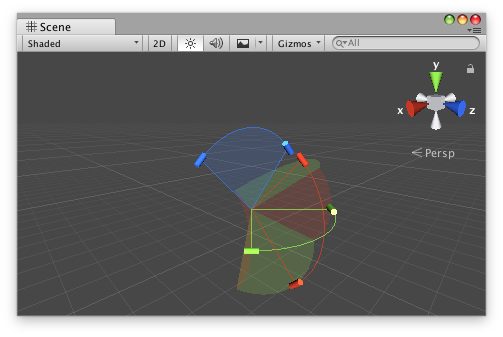

用于在 Scene View 中编辑多轴角运动限制的复合手柄类。

“Scene View 中的 JointAngularLimitHandle。”
使用 DrawHandle 方法渲染的形状假设角度限制的应用顺序如下：先沿 x 轴、然后 y 轴，最后是 z 轴。
以下组件定义了要在运行时为 CharacterJoint 添加的角度限制。
using UnityEngine;
public class JointExample : MonoBehaviour { public float xMin { get { return m_XMin; } set { m_XMin = value; } } [SerializeField] float m_XMin = -45f;
public float xMax { get { return m_XMax; } set { m_XMax = value; } } [SerializeField] float m_XMax = 45f;
public float yMax { get { return m_YMax; } set { m_YMax = value; } } [SerializeField] float m_YMax = 45f;
public float zMax { get { return m_ZMax; } set { m_ZMax = value; } } [SerializeField] float m_ZMax = 45f;
protected virtual void Start() { var joint = gameObject.AddComponent<CharacterJoint>();
var limit = joint.lowTwistLimit; limit.limit = m_XMin; joint.lowTwistLimit = limit;
limit = joint.highTwistLimit; limit.limit = m_XMax; joint.highTwistLimit = limit;
limit = joint.swing1Limit; limit.limit = m_YMax; joint.swing1Limit = limit;
limit = joint.swing2Limit; limit.limit = m_ZMax; joint.swing2Limit = limit; } }
通过以下自定义编辑器示例，您可以在 Scene View 中编辑序列化角度限制。
using UnityEditor; using UnityEditor.IMGUI.Controls; using UnityEngine;
[CustomEditor(typeof(JointExample)), CanEditMultipleObjects] public class JointExampleEditor : Editor { JointAngularLimitHandle m_Handle = new JointAngularLimitHandle();
// the OnSceneGUI callback uses the Scene view camera for drawing handles by default protected virtual void OnSceneGUI() { var jointExample = (JointExample)target;
// copy the target object's data to the handle m_Handle.xMin = jointExample.xMin; m_Handle.xMax = jointExample.xMax;
// CharacterJoint and ConfigurableJoint implement y- and z-axes symmetrically m_Handle.yMin = -jointExample.yMax; m_Handle.yMax = jointExample.yMax;
m_Handle.zMin = -jointExample.zMax; m_Handle.zMax = jointExample.zMax;
// set the handle matrix to match the object's position/rotation with a uniform scale Matrix4x4 handleMatrix = Matrix4x4.TRS( jointExample.transform.position, jointExample.transform.rotation, Vector3.one );
EditorGUI.BeginChangeCheck();
using (new Handles.DrawingScope(handleMatrix)) { // maintain a constant screen-space size for the handle's radius based on the origin of the handle matrix m_Handle.radius = HandleUtility.GetHandleSize(Vector3.zero);
// draw the handle EditorGUI.BeginChangeCheck(); m_Handle.DrawHandle(); if (EditorGUI.EndChangeCheck()) { // record the target object before setting new values so changes can be undone/redone Undo.RecordObject(jointExample, "Change Joint Example Properties");
// copy the handle's updated data back to the target object jointExample.xMin = m_Handle.xMin; jointExample.xMax = m_Handle.xMax;
jointExample.yMax = m_Handle.yMax == jointExample.yMax ? -m_Handle.yMin : m_Handle.yMax;
jointExample.zMax = m_Handle.zMax == jointExample.zMax ? -m_Handle.zMin : m_Handle.zMax; } } } }
| angleHandleDrawFunction | 要在显示角度控制手柄时使用的 CapFunction。 |
| angleHandleSizeFunction | 用于指定角度控制手柄应该多大的 SizeFunction。 |
| fillAlpha | 返回或指定在渲染每个轴的运动范围的填充形状时要使用的不透明度。默认为 0.1。 |
| radius | 返回或指定手柄圆弧的半径。默认为 1.0。 |
| wireframeAlpha | 返回或指定用于沿运动弧线外侧的曲线的不透明度。默认为 1.0。 |
| xHandleColor | 返回或指定用于限制围绕 x 轴的运动的手柄的颜色。默认为 Handles.xAxisColor。 |
| xMax | 返回或指定关于 x 轴的角运动上限。 |
| xMin | 返回或指定关于 x 轴的角运动下限。 |
| xMotion | 返回或指定关于 x 轴的角运动的限制方式。默认为 ConfigurableJointMotion.Limited。 |
| xRange | 返回或指定关于 x 轴的角运动的有效值范围。默认为 [-180.0, 180.0]。 |
| yHandleColor | 返回或指定用于限制围绕 y 轴的运动的手柄的颜色。默认为 Handles.yAxisColor。 |
| yMax | 返回或指定关于 y 轴的角运动上限。 |
| yMin | 返回或指定关于 y 轴的角运动下限。 |
| yMotion | 返回或指定关于 y 轴的角运动的限制方式。默认为 ConfigurableJointMotion.Limited。 |
| yRange | 返回或指定关于 y 轴的角运动的有效值范围。默认为 [-180.0, 180.0]。 |
| zHandleColor | 返回或指定用于限制围绕 z 轴的运动的手柄的颜色。默认为 Handles.zAxisColor。 |
| zMax | 返回或指定关于 z 轴的角运动上限。 |
| zMin | 返回或指定关于 z 轴的角运动下限。 |
| zMotion | 返回或指定关于 z 轴的角运动的限制方式。默认为 ConfigurableJointMotion.Limited。 |
| zRange | 返回或指定关于 z 轴的角运动的有效值范围。默认为 [-180.0, 180.0]。 |
| JointAngularLimitHandle | 创建 JointAngularLimitHandle 类的新实例。 |
| DrawHandle | 使用实例的当前配置在当前手柄摄像机中显示此实例的函数。 |